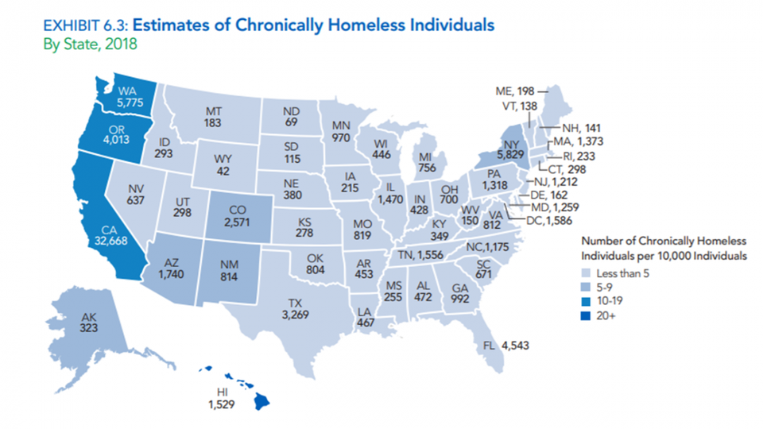

Homelessness & Disease
Hepatitis B Vaccination in Homeless Populations
Following based on research conducted by Dr. Judith A. Stein and Dr. Adeline Nyamathi. It can be found here
What they tested:
- 3 Different Groups
- Each group had different amounts of case managment and tracking
- Everyone was provided with education
What they found:
- Reporting of poorer health led to higher rate of completion
- Lack of social support was linked with not finishing
- Those with higher level of education were more liekely to complete
What does this have to do with COVID-19
We can use this information to make sure that we can test, and provide vaccines to homeless populations once available
- Reach out to homeless shelter to incentivize programs for support and encouragement to get tested, and receive vaccines
- Provide Education about the COVID-19 and what they can do to be safe
Looking at the reasearch these are ideas to get started with. More reasearch and analysis will lead to more ideas and better results